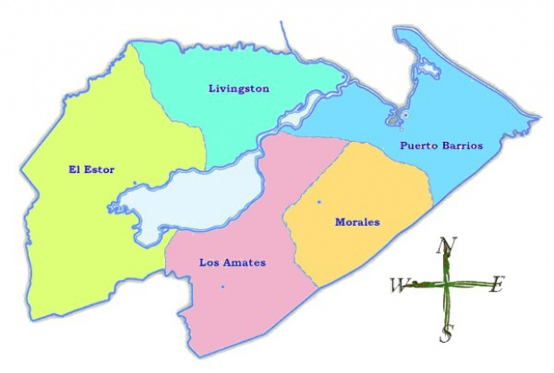

Municipios de Izabal
El departamento de Izabal se ubica en la región nororiental de la República de Guatemala. Cuenta con una extensión territorial de 9 039 km² y su cabecera departamental es Puerto Barrios. Los paisajes de este territorio están decorados por palmeras ante la costa de mar azul.

Curiosidades sobre los Municipios
- Puerto Barrios fue el centro de operaciones de la United Fruit Company, que exportaba bananas a nivel mundial. Este hecho marcó la economía y la infraestructura de la región durante el siglo XX.
- ivingston es conocido por su población Garífuna, descendientes de africanos y caribeños. Es uno de los pocos lugares de Guatemala donde esta cultura afrocaribeña es prominente.
- El Estor es conocido por sus yacimientos de níquel. La minería ha jugado un papel importante en la economía local, aunque también ha sido motivo de conflicto ambiental y social.
- Morales es conocido por la producción agrícola, especialmente banano y palma africana, productos que se exportan desde los puertos cercanos.
- Los Amates es el punto donde comienza el río que conecta el Lago de Izabal con el Mar Caribe. Esta área es famosa por su belleza natural y el castillo de San Felipe, una fortaleza construida por los españoles para protegerse de los piratas.